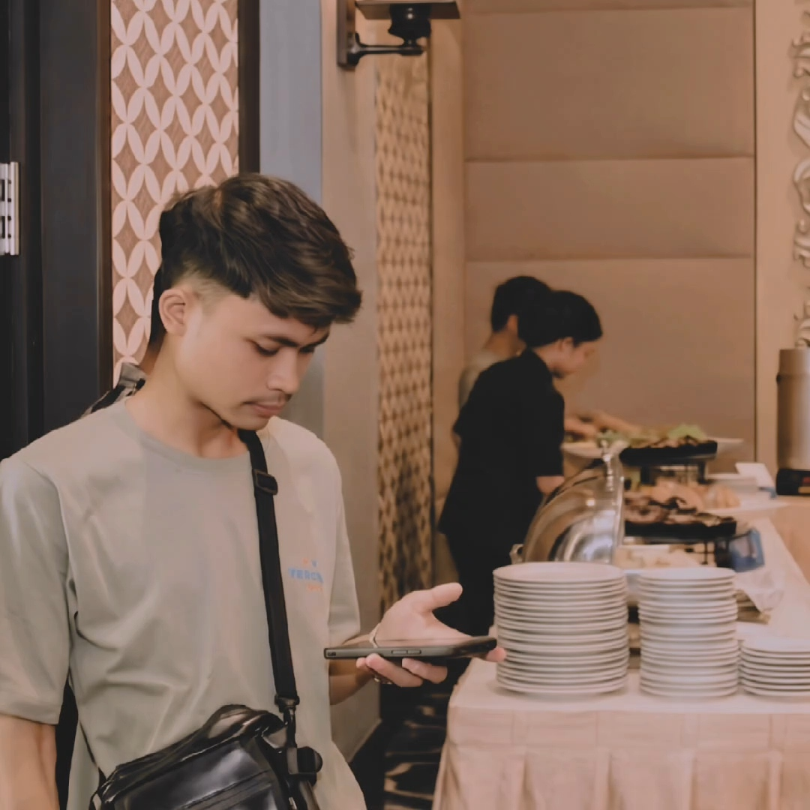

Halo, saya
Saya adalah developer BOT WhatsApp dan Telegram sejak 2019. Saya membangun bot multifungsi menggunakan JavaScript dan Node.js, mulai dari downloader, tools, searching, sistem premium, automation, hingga integrasi API untuk kebutuhan personal, komunitas, maupun bisnis.

Saya ZUFAR AL, developer BOT WhatsApp dan Telegram yang aktif membangun sistem otomatisasi sejak 2019. Fokus utama saya adalah membuat bot yang mudah digunakan, cepat merespons, dan bisa membantu pekerjaan berulang menjadi lebih praktis.
Bot yang saya buat menggunakan JavaScript Node.js dengan pendekatan modular, sehingga fitur dapat dikembangkan secara bertahap: downloader, tools, searching, premium feature, group management, user database, hingga panel admin.
Saya terbiasa membuat bot untuk kebutuhan komunitas, rental bot, layanan premium, dan kebutuhan bisnis kecil seperti auto reply, sistem order, notifikasi, broadcast, integrasi API, serta automation internal.
Nilai utama yang saya tawarkan adalah kecepatan, fleksibilitas, dan maintenance. Bot tidak hanya dibuat agar berjalan, tetapi juga disusun agar mudah dikembangkan dan diperbaiki saat kebutuhan berubah.
Konsultasi SekarangFreelance / Independent Developer
Project personal dan kebutuhan client
Command, group tools, downloader, premium, dan admin system
Pembuatan bot WhatsApp dengan fitur modular, respons cepat, database user, sistem owner, dan pengaturan premium.
Menu button, command handler, channel tools, dan premium access
Pembuatan bot Telegram dengan tampilan menu yang rapi, command praktis, integrasi API, dan fitur member premium.
Media downloader, searching, notification, dan data processing
Menghubungkan bot dengan layanan eksternal agar dapat mengambil data, memproses media, mengirim notifikasi, dan menjalankan automation.
Monitoring, update fitur, bug fixing, dan optimasi performa
Membantu bot tetap aktif, stabil, dan mudah dikembangkan melalui struktur kode yang rapi dan proses maintenance berkala.
2019+ pengalaman membuat bot WhatsApp dan Telegram dengan JavaScript Node.js.
Semua contoh project dan layanan
Bot dengan menu lengkap untuk membantu kebutuhan harian pengguna: downloader, tools, searching, premium feature, cek ID, owner command, channel button, dan command berbasis prefix. Sistem dibuat modular agar fitur baru dapat ditambahkan dengan cepat.
Bot untuk menjawab pertanyaan pelanggan, mengirim katalog, membuat alur order sederhana, menyimpan data pelanggan, dan mengirim notifikasi kepada admin.
Fitur untuk membantu admin mengelola grup: welcome message, anti-link, anti-spam, kick user, promote/demote, rules, report, dan log aktivitas.
Sistem untuk mengatur akses premium, masa aktif, limit fitur, daftar user, cek ID, dan command khusus owner sehingga bot bisa digunakan sebagai layanan berbayar.
Integrasi API untuk download media, pencarian informasi, konversi format, dan pemrosesan data agar bot memiliki fitur yang lengkap dan praktis untuk user.
Saran project lanjutan: panel web untuk melihat jumlah user, status bot, daftar premium, log command, konfigurasi fitur, dan statistik penggunaan secara real-time.
Bot untuk reminder otomatis, broadcast terjadwal, notifikasi channel, dan pengiriman pesan massal dengan kontrol admin serta log pengiriman.
Butuh bot WhatsApp, bot Telegram, sistem premium, downloader, automation, atau integrasi API? Ceritakan kebutuhan Anda, saya bantu susun solusi yang sesuai.
Kirim Email